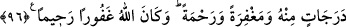

târihine de uygun olarak anlaşılan budur.
Âyette özrü olmaksızın cihaddan geri kalanlar ile Allah yolunda savaşanların ecir ve
sevapta derecelerinin eşit olmayacağı ifâde edilmektedir.
“Özürsüz olarak cihaddan geri kalan kimse ile cihâda katılan kimsenin eşit
olamayacağı zâten mâlumdur. O halde eşit olmayacaklarının belirtilmesinin faydası
nedir?” dersen ben de derim ki: “Bunun faydası, cihaddan geri kalan kimseyi,
derecesini yükseltmek ve manevî makamının gerilemesinden sakındırmak üzere savaşa
teşvik etmek için” cihâda katılanla katılmayan arasındaki büyük farklılığı hatırlatmaktır.
“Allah, malları ve canlarıyla cihâd edenleri” özürsüz olarak “oturanlardan derece
bakımından üstün kıldı.” Bu cümle, oturanlarla cihâd edenlerin neden eşit
olmadıklarını açıklamaktadır. Çünkü onların eşit olmaması, birinin derecesinin
diğerinin derecesinden fazla veyâ noksan olması ihtimalini ortaya çıkarır. İşte Allah
Teâlâ bu cümle ile onların eşit olmamasının cihâda katılanları üstün kılması sebebiyle
olduğunu beyân etmiştir. Sanki “Neden onlar eşit değil?” diye sorulmuş ve bu cümleyle
cevap verilmiştir.
“Gerçi Allah” cihaddan geri kalanlar ile cihâda iştirak edenlerin “hepsine de
güzellik”, yâni güzel mükâfât “va’detmiştir” ki o da cennettir. Bu ise onların
inançlarının güzel ve niyetlerinin samîmî olması sebebiyledir. Farklılık ise ancak
sevâbın çokluğunu gerekli kılan amelin fazlalığındandır. Bu ara cümle, iki gruptan
birinin üstün kılınmasının diğerinin tamâmen mahrum kalacağını îmâ etme ihtimâlini
ortadan kaldırmak için getirilmiştir.
Fakihler, bu âyetin cihâdın farz-ı ayn olmayıp farz-ı kifâye olduğuna delâlet ettiğini
söylemişlerdir. Çünkü Allah Teâlâ cihâda katılanlara va’dettiği gibi yerlerinde
oturanlara da güzellik va’detmiştir. Şayet cihâd tek tek herkese farz olsaydı, yerinde
oturan kimse Allah Teâlâ’nın güzellik va’dine nâil olmazdı.
“Ama Allah mücâhidleri, oturanlardan çok büyük bir ecirle üstün kılmıştır.”
96- Kendi katından dereceler, bağışlama ve rahmet vermiştir. Allah çok
bağışlayıcı ve esirgeyicidir.
“Kendi katından dereceler” “Dereceler” kelimesi, verilen üstünlüğün çokluğunu
beyan etmektedir. “Allah katından” olması, “dereceler”in büyüklüğüne ve kadrinin
yüceliğine delâlet eden bir sıfattır.
Yâni Allah Teâlâ katında, dereceler vardır, demektir ki bunlar yetmiş derecedir. Her
iki derece arasında yarışa hazırlanmış soylu atların koşmasıyla yetmiş yıllık mesâfe
vardır. Yâhut bunlar yedi yüz derecedir. Bir hadisde şöyle buyurulmuştur:
“Cennette yüz derece vardır. Allahu Teâlâ bu dereceleri kendi yolunda savaşanlar